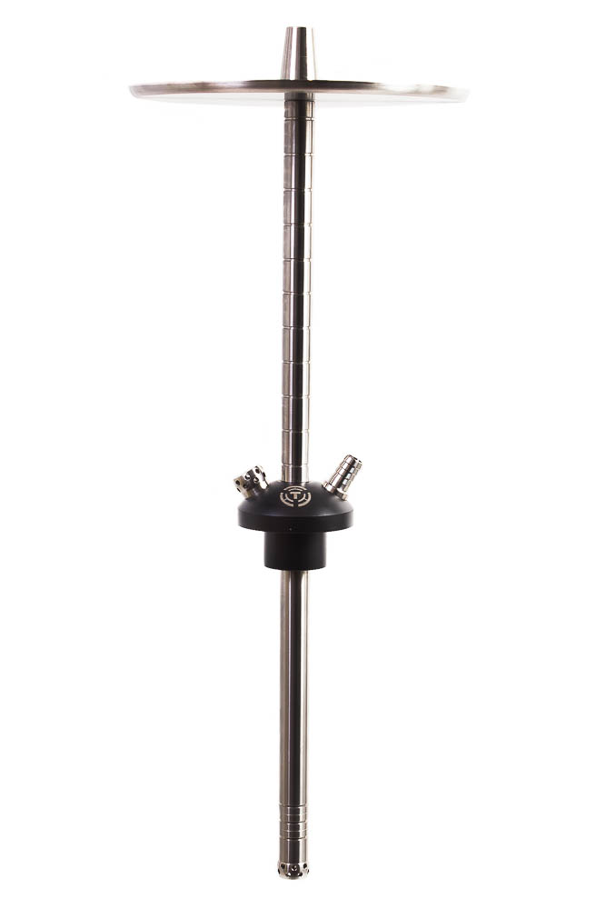

Target Slim

Кальян выполнен в минималистическом стиле, так популярном сейчас. Больше всего мне понравились детали: как выглядят засечки на шахте и мундштуке, стильный клапан продувки и диффузор. Кальян смотрится хорошо и с прозрачными колбами, и с цветными.